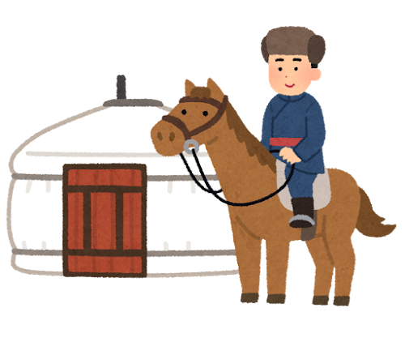
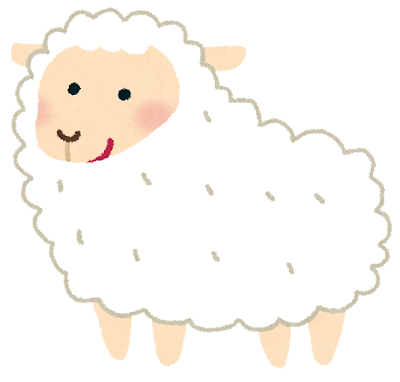

新疆料理的世界
新疆料理孕育于丝绸之路的悠久历史与丰饶的大自然，拥有独特的饮食文化。广袤的绿洲与得天独厚的畜牧资源，造就了香气四溢的羊肉、风味浓郁的辛香调料、手工拉条子与烤面食，洋溢着丝路风情，深受人们喜爱。
代表性料理
羊肉串
（卡瓦普 - 炭烤羊肉串）
裹满孜然与辣椒等香料，炭火慢烤而成，是新疆极具代表性的街头小吃。羊肉鲜嫩多汁，香气扑鼻，令人食欲大开。

烤馕・烤包子
（烤馕 / 萨木萨）
将发酵面饼贴在特制馕坑内壁烤出的香脆烤馕，以及内馅包裹满满鲜嫩羊肉、外皮金黄酥脆的烤包子。两者既是当地人的主食，也是倍受欢迎的日常点心。

拉条子（拌面）・奶茶・酸奶粽子
劲道的手工拉面拌上番茄羊肉炒菜浇头的“拉条子（拌面）”、微咸醇厚的特色咸奶茶，以及浇上自制浓稠酸奶与蜂蜜红糖的甜点“酸奶粽子”，风味丰富多样。
新疆料理的历史与变迁
1. 【草原时代】羊群与乳香
地区：蒙古高原及周边草原
生活方式：逐水草而居的游牧生活。

饮食：以羊肉、马奶酒和天然乳制品为主。

特点：保留着古代游牧民族的生活方式与纯粹肉乳饮食。
2. 【绿洲时代】小麦与烤饼
地区：迁徙至新疆绿洲（丝路沿线）
生活方式：建城定居，开启灌溉农耕。
饮食：引种中东小麦，学会烤饼、制作面食与拉面。
特点：1000多年前就已有文献记载多达13种面饼。
3. 【融合时代】东西文化的交融
地区：商贸枢纽（塔里木盆地绿洲商道）
生活方式：恪守清真饮食传统，广泛吸收各地文化。
饮食：引入中原的“炒菜”技艺与香料，近代还融合了俄罗斯风味面点。
今日之美
“游牧民族的优质鲜肉”＋“绿洲农耕的小麦面食”＋中式烹饪技法融为一体，最终演变为了如今享誉世界的新疆美食文化。